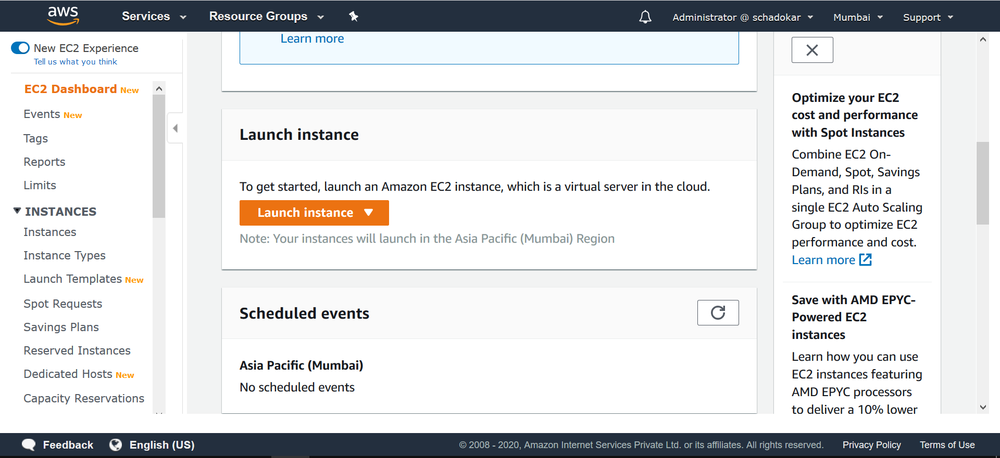
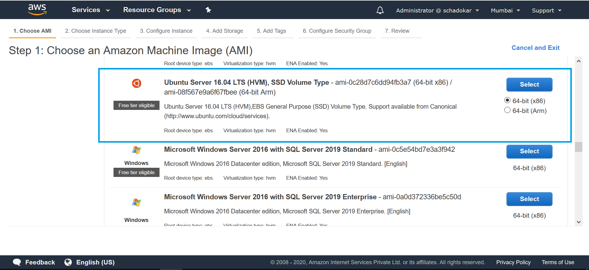
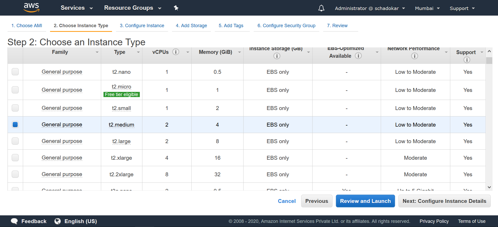
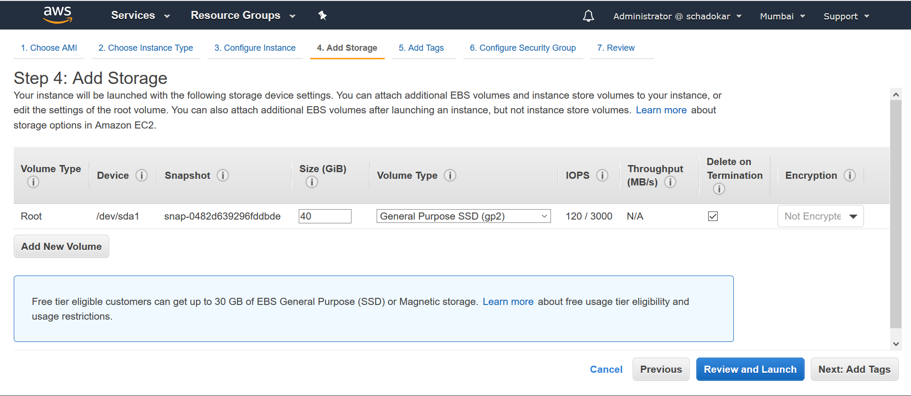
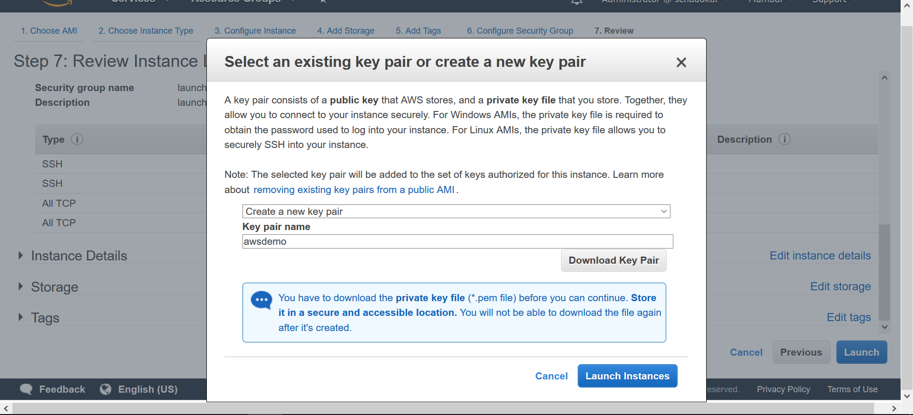
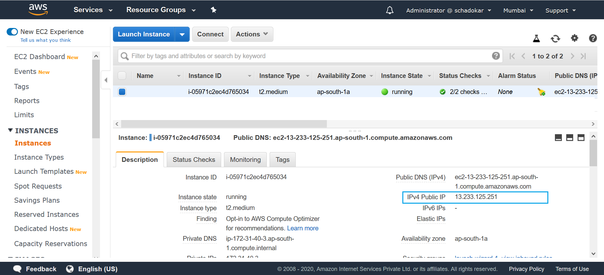
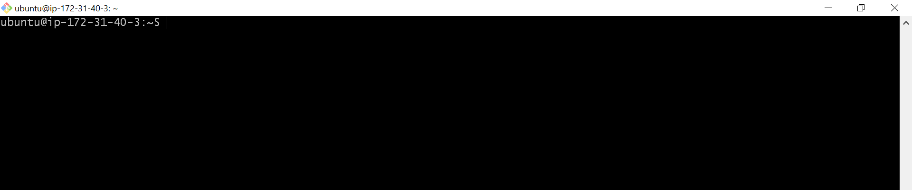
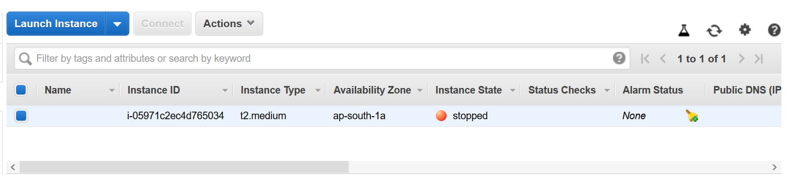

Create a new aws account.
Login to your aws account. Select services on top left and search EC2 and select it.
EC2 Dashboard
Scroll down to Launch Instance section and select Launch Instance.

Configure Instance
Follow the steps to create a Ubuntu 16.04 VM.
Step 1 Choose an Amazon Machine Image (AMI)
Scroll down and select **Ubuntu Server 16.04 LTS (HVM).

Step 2 Choose an Instance Type
Select t2.medium and click Configure Instance Details.

Select next step till Add Storage.
Step 3 Add Storage
By default all the VMs comes with default storage. You can increase the default storage and add an extra disk.

Select next step till Configure Security Group.
Step 3 Configure Security Group
Security group allow you restrict the access. As for the learning, keep it simple and open it for everyone.
Add 2 rules, SSH and All TCP. Change source to Anywhere.

Select Review and Launch.
Step 4 Launch
Scroll down and select Launch.
Create a new key-pair. It is a public-private key pair. AWS stores the public key while private key is saved by you. While connecting to the instance you need this private key to connect.
Give a Key pair a name.

Select Launch Instance. It will take some time to launch the instance.
To check the instance, either you can scroll down and select View Instance or go to EC2 Dashboard and select Instance from the left menu.
Connect to the Instance
Once the instance is ready. Its Instance State is changed to running. Copy the IPv4 Public IP.

Open the command line.
You can use any terminal such as cmd, bash, terminal etc.
Open the terminal and go to the directory where you saved the private key.
Use the ssh command to connect to the vm.
ssh -i path/privatekey.pem ubuntu@ipaddress
ssh -i awsdemo.pem ubuntu@13.233.125.251

Note: Don't forget to stop the VM when you are not using. When you restart it, that time the ipaddress will change.
Go to Actions > Instance State > Stop.
